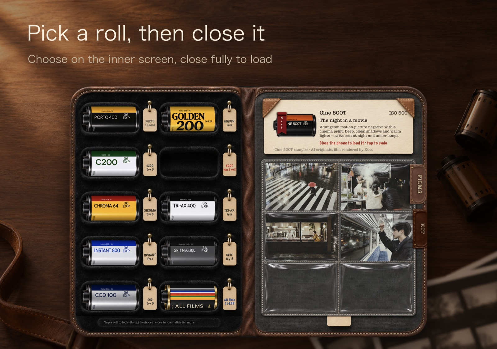

<title>Koco Duo 截图样稿</title>
<meta name="claude:viewport-fit-sides" content="cover">
<style>
:root{--bg:#f3efe6;--fg:#201c17;--muted:#6f675c;--line:#ddd5c6;--accent:#b23b1e}
@media (prefers-color-scheme:dark){:root:not([data-theme="light"]){--bg:#15130f;--fg:#ede7db;--muted:#9b9284;--line:#332e27;--accent:#ec7b52;color-scheme:dark}}
:root[data-theme="dark"]{--bg:#15130f;--fg:#ede7db;--muted:#9b9284;--line:#332e27;--accent:#ec7b52;color-scheme:dark}
body{background:var(--bg);color:var(--fg);font:16px/1.65 -apple-system,"PingFang SC",system-ui,sans-serif;padding-left:max(16px,env(safe-area-inset-left,0px));padding-right:max(16px,env(safe-area-inset-right,0px));padding-block:22px 48px}
main{max-width:900px;margin:0 auto}h1{font-size:22px;margin:0 0 4px}
.sub{color:var(--muted);font-size:14px;margin:0 0 18px;max-width:70ch}
figure{margin:0 0 22px}img{width:100%;height:auto;border-radius:10px;display:block;border:1px solid var(--line)}
figcaption{font-size:14px;color:var(--muted);margin-top:6px}
.tbl{overflow-x:auto}table{border-collapse:collapse;min-width:620px;font-size:14px}td,th{border-bottom:1px solid var(--line);padding:6px 8px;text-align:left;vertical-align:top}
</style>
<main>
<h1>Duo 截图样稿（第三版：标题重写）</h1>
<p class="sub">按你的意见“不要文艺”，和 GPT 一起重写了 8 张标题：直接说这个功能怎么用、对你有什么用，像跟朋友说话。背景和版式没变，内屏截图换成最新界面（凹槽卡片、右边页签）。GPT 的讨论原文在 project/discuss/duo-copy-v3.md。</p>
<figure><figcaption>第 1 张 · 外屏（中文）</figcaption></figure>
<figure><figcaption>第 3 张 · 内屏（中文）</figcaption></figure>
<figure><figcaption>Shot 1 · English</figcaption></figure>
<figure><figcaption>Shot 3 · English</figcaption></figure>
<h2 style="font-size:18px">8 张标题（新）</h2>
<div class="tbl"><table>
<tr><th>#</th><th>中文标题 / 副标题</th><th>English</th></tr>
<tr><td>1</td><td>取景就能看到胶片效果<br>外屏实时显示，拍之前就知道成片的样子</td><td>See the film look live<br>Preview the film look on the outer screen</td></tr><tr><td>2</td><td>手机半折，低头就能拍<br>下半屏变取景器，带水平气泡和快门键</td><td>Fold halfway to shoot<br>Look down to frame, with a level and shutter key</td></tr><tr><td>3</td><td>展开选卷，合上就装好<br>在内屏挑一卷，把手机完全合上就装进相机</td><td>Pick a roll, then close it<br>Choose on the inner screen, close fully to load</td></tr><tr><td>4</td><td>合着手机也能换卷<br>在外屏打开胶卷仓，换另一卷</td><td>Swap rolls while folded<br>Open the film chamber on the outer screen</td></tr><tr><td>5</td><td>三卷免费，其他先试拍<br>其他每卷都能免费拍几张，再决定买不买</td><td>Three rolls free, try the rest<br>Every other roll has a few free shots</td></tr><tr><td>6</td><td>锁屏按一下就打开<br>锁屏时按相机控制键，直接打开 Koco</td><td>Open Koco while locked<br>Press Camera Control to open Koco</td></tr><tr><td>7</td><td>原图和效果，做成视频发<br>把原图和胶片效果放进一段短视频分享</td><td>Share a before & after video<br>Your original and film look in one short video</td></tr><tr><td>8</td><td>照片只存在你手机里<br>不用注册账号，照片也不会上传</td><td>Your photos stay on iPhone<br>No account needed and no photo uploads</td></tr>
</table></div>
</main>
